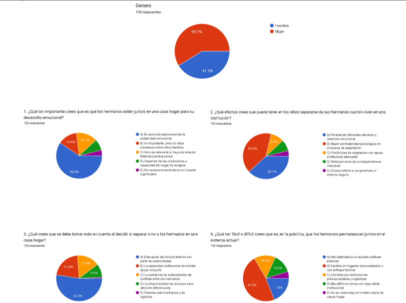
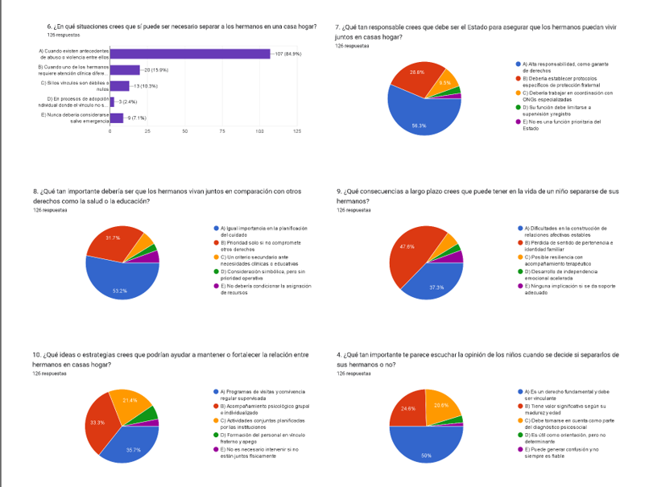

¿Qué se analizó?
Se analizaron un total de 1,320 respuestas dadas por el formulario, agrupadas en graficas que representan de una mejor manera las respuestas de los voluntarios encuestados lo que nos permitió un mejor entendimiento de los resultados. A continuación las gráficas correspondientes:
Al analizar los datos pudimos identificar a que se le da prioridad con respecto a la separación de los hermanos. la salud mental y social de los hermanos, la relación que tienen para saber si es necesario darles atención por separado o de manera grupal y, así determinar si es viable la separación de los hermanos.
Los voluntarios encuestados tienen una visión de la problemática en donde se debe considerar la opinión de los hermanos al tomar este tipo de decisiones, sin embrago, el 84% de los encuestados consideran que si existen antecedentes de violencia o abuso entre ellos es necesario su separación y atención psicológica regular y supervisada por el bien de los hermanos.
Tras analisar a profundidad las respuestas de los entrevistados sobre el papel de los profesionales cuando se toma la decisión de separar a los hermanos, a pesar de encontrar muchas respuesta variadas la mayoria llega a la misma conlusión, se debe de tener ética y profesionalismo para tratar con la situacion, evaluar la relación entre hermanos para saber cual es la mejor decisión para los hermanos, brindar atención de calidad tanto médica y psicológica, aunque algunos otros consideran que no deberian hacer nada y que se puede hacer nada para evitar que la relación entre hermanos se rompa.